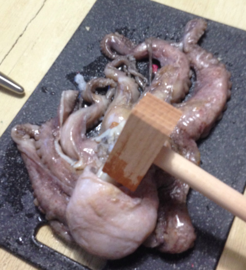
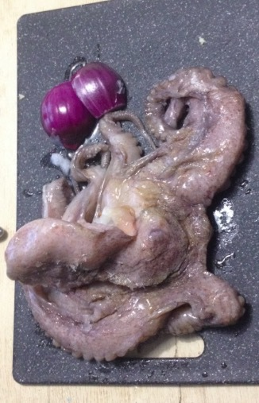
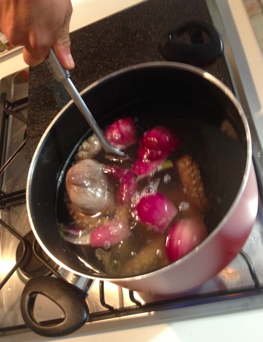
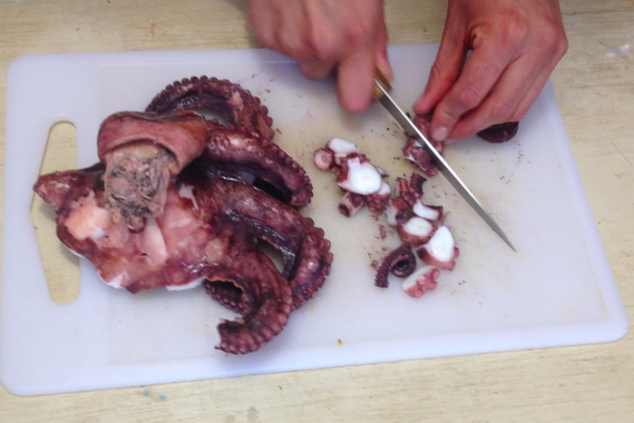
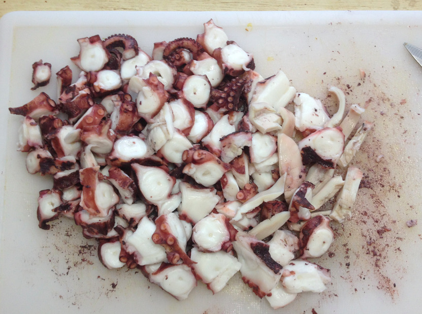

Octopus with black olive sauce¶
- Serves: 4
- Type: entry
Background¶
This is a Peruvian dish in the 1950s introduced by Rosita Yimura, a Pervuian from Japanese descent. If it a dish that fuses the Peruvian and Japenese cuisines.
Ingredients¶
Octupus: 1 kg
Red onion: 1 (small)
Bayleaf: 3
Salt: 1 tablespoon
Black pepper: 1 teaspoon
Lemon juice: 2 tablespoon
Mayonaise: 3 tablespoon
Black olive sauce: 5 tablespoon
- alternative: black olives, mixed, without seed: 150 g
Optional:
- parsley, for decoration
Note:
A fresh octopus has a lot of intact fibre, which means that it needs mechanical tenderization (pounding it repeatedly). For this reason, frozen octupus may be recommended.
Mechanical tenderization of an octopus
Steps¶
Cut the onion in 4 parts
Octopus and onions
Boil 2.5 l of water with the salt, bayleaf and cut onion
Clean the octopus. (It is assumed that its brain has already been removed before you got it.)
When the water poils, hold the octopus with a fork and submerge it in the water for 20 seconds, then remove it. Repeat 3 times. If the octopus was frozen, make sure that the water is boiling each time the octupus is placed in the water
Hold the octopus with a fork to submerge it in boiling water
Octopus submerged in boiling water
Now that the octopus has been cooked, remove the beak (between the tentacles) and eyes (if present). Place the octopus on a plate and let it cool
When the octopus has cooled down, cut it in pieces of about half a centimeter thickness.
Slicing the octopus’ tentacles
The octopus’ tentacles, sliced
Use a bowl to make the cream sauce by mixing the mayonaise, lemon juice, the black pepper, and the black olive sauce.
To serve, for each person: place the octopus on a plate and place the sauce on top. Optionally decorate with parsley.